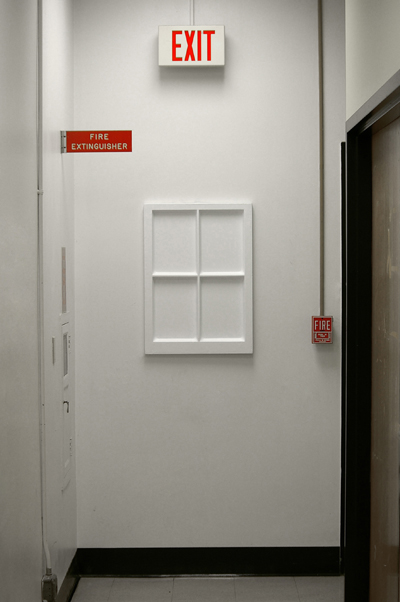

Windows (Video Installation)
November 22, 2010 / polystyrene plastic, video projection
Windows is a collaborative video installation completed with video artist, Africanus Okokon. The work explores the integrity of material use, and the necessity of technological mediation in our everyday experiences. Two video clips are projected onto two vacuum-formed polystyrene windows (one "broken" and the other whole) and looped indefinitely.
